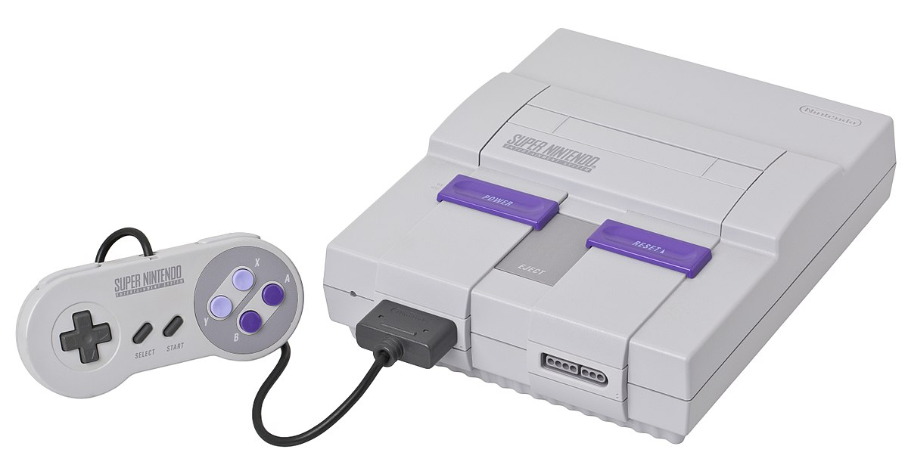
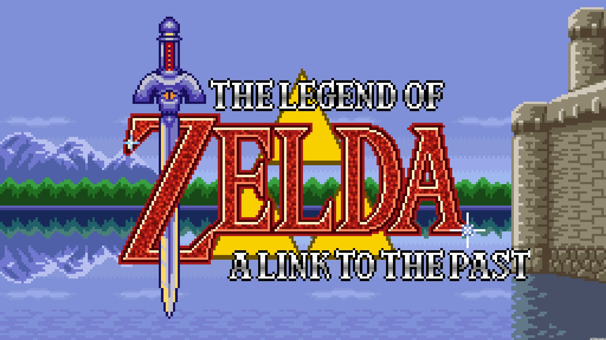
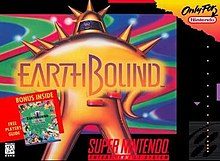
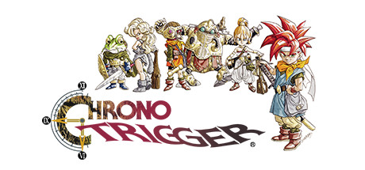

Super Nentendo Entertainment System

- Relased: August 23, 1991
- Sales: 49.10 million
- Most Sold Game: Super Mario World
- Ranking (in sales): 5th
The SNES was second home console that Nintendo released and while looking very similar to the NES it was in truth very different. The SNES was much more powerful than its predecessor, allowing for better graphics (even some early 3D were released) and more advanced games. Also, controller was updated to include to extra gamepad buttons and shoulder buttons, but of which have become common mainstream controllers. The games are the real feature of the Super NES as many franchises were developed and flourished on the more powerful system. Overall, the SNES was not as innovative as the Wii or Switch, but it did allow Nintendo to improve their games and game-play to a new level.
Games
The Legend of Zelda: A Link to the Past

- Relased: April 13, 1992
- Sales: 4.61 million
- Rating: 9/10
- Genere: Action-adventure
This 16 bit game for the SNES is similar to the original Legend of Zelda for the NES because it still has the large walkable landscape in two dimensions and has different caves and dungeons throughout. Unlike the NES however, this game contained a much longer game, longer dungeons, better graphics, and a excellent story line. The goal of the game is to play as Link to save Zelda and the world by stopping darkness from spreading to the entire land. You must receive several pendents before you are able to get the master sword and fight the evil magician. After beating him, you are transported to the dark world were you must save the missing people to reseal the darkness. Overall, this game is a hard, yet enjoyable game.
Super Mario RPG: Legend of the Seven Stars
- Relased: May 13, 1996
- Sales: 2.14 million
- Rating: 9/10
- Genere: Role-playing
This 16 bit, role playing game that was developed by Square by using the characters and stories of Nintendo that is very hard and challenging. This game features constant turn style fighting that is a crucial part, brain puzzles that make it hard to figure out and make the game interesting, and items that boost attack, restore health, and destroy enemies. The story is that Mario's constant fight with Bowser continues, until it is interrupted with a never before see foe that kicks Bowser and Mario from Bowser's Castle. The task of the game is to obtain seven stars that will help destroy the enemy and restore cosmic balance with three protagonists, Mario, Bowser, and Geno. While this game is very time consuming and difficult at different parts, this game is a great strategic game that is fun for anyone.
Earthbound

- Relased: June 5, 1995
- Sales:
- Rating: 9/10
- Genere: Role-playing game
Considered one of the best RPGs of all time, Earthbound is a game that is entertaining for all ages. Players take on the role of Ness, a young boy with psychic powers and he and his friends must team up to save Earth from an alien invasion. Filled with challenging gameplay and quirky humor, Earthbound is a game that deserves to be played all RPG fans.
Chrono Trigger

- Relased: August 11, 1995
- Sales: 2.65 million
- Rating: 9.5/10
- Genere: Role-playing
From the developers of the Final Fantasy series, Chrono Trigger is dubbed one of the best games of all time. Players must travel through time gathering allies in order to save the world from an apocalypse of biblical proportions. Featuring a stellar plot and a great gameplay, Chrono Trigger is must play for any RPG fans and is highly recommended to anyone who seeks a challenge.